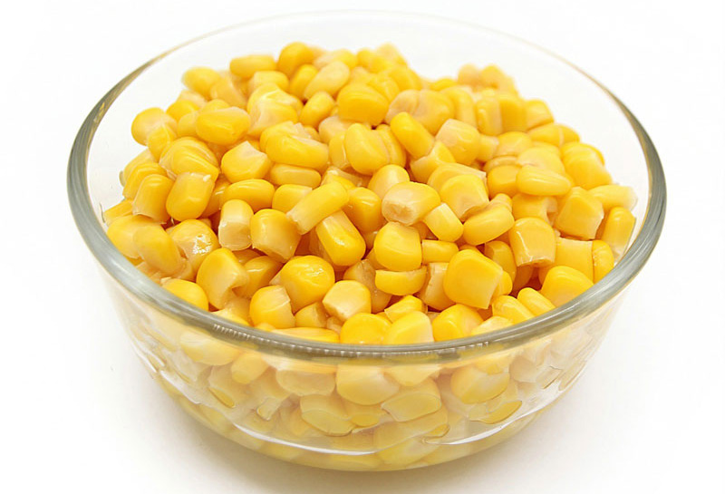

כדורי תפוחי אדמה קריספיים טעימים

מצרכים
לכדורים:
- 3 תפוחי אדמה בגודל בינוני
- 2 כפות קורנפלור/קמח לבן
- 5 כפות גרגירי תירס מתוק מקופסת שימורים - מסוננים מנוזלים
- חצי כפית מלח
- קורט פלפל לבן

לציפוי:
אופן ההכנה
- מחממים תנור ל-200 מעלות ומשמנים נייר אפייה.
- מקלפים את תפוחי האדמה חוצים אותם ושמים בסיר עם מים ומבשלים על אש גבוהה כאשר הסיר מכוסה.
- כשהמים מבעבעים, מנמיכים מעט את הלהבה וממשיכים לבשל עד שתפוחי האדמה מתרככים-ניתן לבדוק על ידי נעיצת מזלג האם ננעץ בקלות בתפוחי האדמה.
- מסננים את תפוחי האדמה מהמים ומועכים לפירה.

- מצננים ומוסיפים גרגירי תירס, קורנפלור (או קמח), מלח ופלפל לבן ומערבבים היטב.
- יוצאים כדורים קטנים עם הידיים, מגלגלים בפירורי לחם ומניחים על נייר האפיה המשומן.
- מרססים או מברישים מעל הכדורים מעט שמן.
- אופים בתנור במשך 25-30 דקות, הופכים צד ואופים 10 דקות נוספות עד להזהבה.